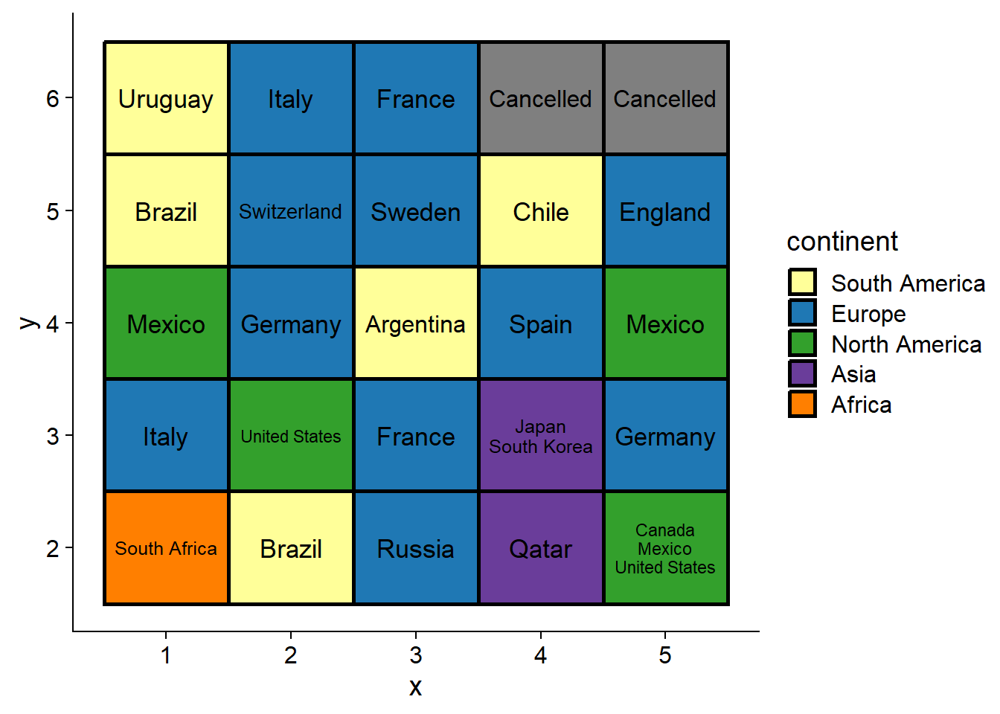
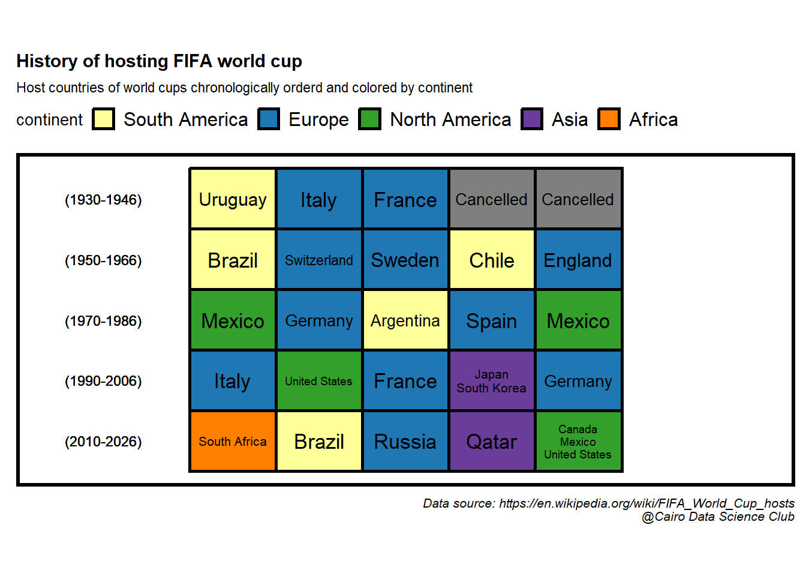

1.3 What is the timeline of hosting the world cup?
What was missing from the previous representation of the data is the time component. In this section we’ll explore a visualization method that would allow us to add this crucial aspect.
Let’s start by preparing the hosting data for visualization by filling in the gap years where the world cup stopped due to WWII
#add missing years in which world cup was cancelled
df_tm <- df_host1 %>%
complete(host_year = full_seq(host_year, 4)) %>%
mutate(continent = ifelse(is.na(continent), "Cancelled", continent),
country_name = ifelse(is.na(country_name), "Cancelled", country_name))
#make a 6x5 grid from the hosting data and add the coordinate of each cell in the grid
df_tm <- df_tm[1:30,] %>%
mutate(y = rep(6:1, each = 5),
x = rep(1:5, 6),
country_name = case_when(
str_detect(country_name, "Canada") ~ "Canada\nMexico\nUnited States", #add a new line between cohosts
str_detect(country_name, "Japan") ~ "Japan\nSouth Korea", #add new line between cohosts
TRUE ~ country_name),
continent = factor(continent, levels = unique(continent))) %>%
filter(!is.na(continent))Let’s use chronologically ordered tiles (AKA waffle plot) to look at the timeline of hosting the world cup.
df_tm %>%
ggplot(aes(x, y, fill = continent ))+
geom_tile(color = "black", size = 1)+
ggfittext::geom_fit_text(aes(label = country_name), size = 13,show.legend = FALSE)+
scale_color_manual(values = conti_cols)+
scale_fill_manual(values = conti_cols)## Warning: Using `size` aesthetic for lines was deprecated in ggplot2 3.4.0.
## ℹ Please use `linewidth` instead.
That’s a good start! Let’s add the year information and further beautify the plot.
df_tm %>%
ggplot(aes(x, y, fill = continent ))+
geom_tile(color = "black", size = 1)+
ggfittext::geom_fit_text(aes(label = country_name), size = 13,show.legend = FALSE)+
#add the time interval of each row
geom_text(data = . %>%
group_by(y) %>%
mutate(range = glue::glue("({min(host_year)}-{max(host_year)})")) %>%
ungroup(),
aes(label = range),
x = -0.5,
size = 3)+
scale_x_discrete(expand = expansion(add = 2))+
guides(fill = guide_legend(nrow = 1))+
labs(title = "History of hosting FIFA world cup",
subtitle = "Host countries of world cups chronologically orderd and colored by continent",
caption = caption_cdc)+
coord_fixed(0.7)+
scale_color_manual(values = conti_cols)+
scale_fill_manual(values = conti_cols)+
theme(title = element_text(size = 10),
axis.line = element_blank(),
axis.ticks = element_blank(),
axis.text = element_blank(),
axis.title = element_blank(),
legend.position = "top",
panel.border = element_rect(linewidth = 2,linetype = "solid", color = "black"))
This is a condensed and clear representation of our data, which are two desirable features of data visualization.